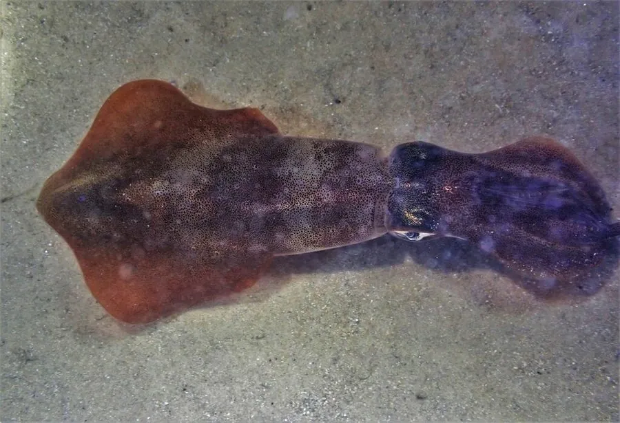

软体动物 · 动物界
中国枪乌贼 Uroteuthis chinensis

中国近海最常见的鱿鱼，体形细长、尾端尖，肉质鲜嫩，是沿海重要的经济头足类，广泛用于鲜食和干制。
- 分类
- 门软体动物门纲头足纲目枪形目科枪乌贼科属尾枪乌贼属
- 栖息环境
- 中国东海、南海的近岸和大陆架海域，有季节性洄游
- 地理分布
- 中国东海、南海及台湾周边海域，以福建、广东和台湾沿海产量较大
- 保护级别
- 暂无评估；中国未列入国家重点保护野生动物名录（重要渔业资源）
物种志
中国枪乌贼体呈长锥形，后部尖细，两侧的鳍呈三角形，位于胴部后段。它有 8 条腕和 2 条捕食触腕，触腕末端带有吸盘；体内有一片透明的角质内壳。体色浅粉或灰白，体表分布着细小的色素斑点，能随环境改变颜色。胴长一般 15–25 cm，最大约 40 cm。
中国枪乌贼分布于中国东海、南海的近岸至大陆架海域，台湾周边产量较大。它有季节性洄游行为：春季向近岸浅海移动，秋冬则游向较深的海域。它是肉食性动物，捕食小鱼、虾类和甲壳类，靠喷水推进快速游动。繁殖期在春夏季，雌鱼把卵囊附着在海底礁石和渔具上，卵囊像白色的小棒，孵化后幼体进入水层生活。中国枪乌贼寿命约 1 年，繁殖后死亡。它是中国沿海重要的经济头足类，广泛用于鲜食、干制和加工，在台湾地区被称为“锁管”。目前它没有IUCN 的正式评估，中国未将其列入国家重点保护野生动物名录。
形态与习性
- 食性肉食性，捕食小鱼、虾类和甲壳类
- 胴长一般 15–25 cm，最大约 40 cm
- 寿命约 1 年，繁殖后死亡
- 繁殖春夏季产卵，卵囊像白色小棒附着在礁石和渔具上
- 洄游春季向近岸浅海移动，秋冬游向较深海域
- 渔业中国沿海重要经济头足类，可鲜食、干制和加工
趣味知识
- 中国枪乌贼就是市场上常见的“鱿鱼”，体形细长，尾端尖。
- 它的卵囊像白色的小棒，黏附在礁石和渔具上孵化。
- 中国枪乌贼寿命只有约一年，一生只繁殖一次。